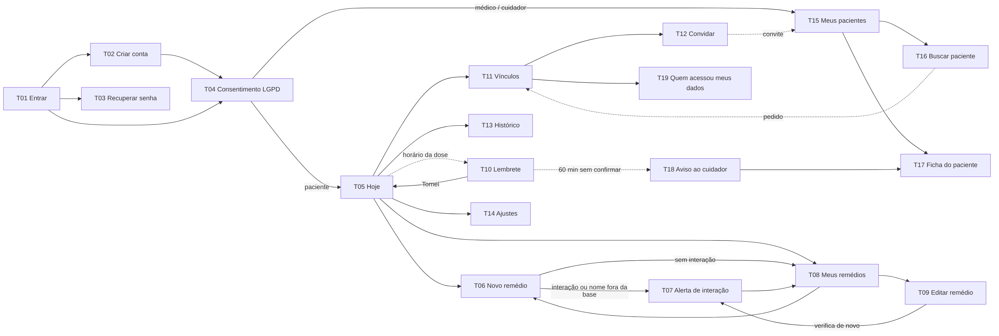

Engenharia de Software · Sistemas de Informação · Unochapecó
Equipe: Camila Siviero, Leonardo Ribas, Eduarda Cristine Vargas, Gabriel Mezzomo Oliboni, Lucas Trentin Avila e Wellinton Davi da Costa
Versão 2.0 · 03/11/2026
Protótipo navegável de alta fidelidade, em aplicação web responsiva (celular e computador). Todos os botões funcionam: contas, remédios, doses, vínculos e histórico são gravados no navegador. Não há servidor nesta etapa, por isso cada aparelho tem os próprios dados e o e-mail de recuperação de senha é mostrado na tela.
?telas no endereço, o número da tela (T01, T02…) aparece no canto inferior direito.Dose2026, e 9 dias de histórico.Linha contínua: ação do usuário. Linha tracejada: evento do sistema (lembrete no horário, pedido ou convite chegando à outra pessoa, aviso ao cuidador depois de 60 minutos).

| Fluxo | Caminho | Passos da história |
|---|---|---|
| F1 · Criar conta e entrar | T01 → T02 → T04 → T05 (alternativo: T01 → T03 → T01) | 1, 2 |
| F2 · Cadastrar remédio com verificação de interação | T05 → T06 → T07 (se houver interação) → T08 | 3, 4, 5 |
| F3 · Médica ou cuidadora pede vínculo | T15 → T16 → (pedido) → T11, paciente aceita ou recusa | 6, 7, 8 |
| F4 · Paciente convida | T11 → T12 → (convite) → T15, convidado aceita | 9 |
| F5 · Consultar dados do paciente | T15 → T17 (acesso registrado em T19) | 10 |
| F6 · Lembrete e confirmação | T10 → Tomei → T05 | 11, 12 |
| F7 · Dose não confirmada | 60 min sem confirmação → T18 (aviso na T15 da cuidadora) → T17 | 13 |
| F8 · Alterar dose | T08 → T09 → T07 → T08 | 14 |
| F9 · Histórico | T13 (paciente) e aba Histórico da T17 (médica e cuidadora) | 15 |
Os números de história são os passos da história do Seu João (seção E2). Clique no endereço para abrir a tela no protótipo (é preciso estar logado com o perfil certo).
Requisitos de infraestrutura (RNF09 tempo de resposta, RNF13 Android/iOS, RNF14 atualizar base sem nova versão, RNF15 disponibilidade, RNF16 backup) não são verificáveis num protótipo e ficam para a implementação. RNF05 está sem texto na E2.
Objetivo: verificar se uma pessoa do público-alvo consegue, sem ajuda, completar os fluxos centrais e entender os alertas.
Participante: pelo menos uma pessoa representativa: alguém que toma remédio de uso contínuo (perfil Seu João) ou que cuida de alguém que toma (perfil Ana).
Preparação: abrir o protótipo no celular do participante ou em um computador e criar os dados de exemplo. Um integrante conduz e outro anota e cronometra.
Condução (15 a 20 min): ler cada tarefa sem dizer onde clicar. Pedir que a pessoa pense em voz alta. Ajudar só se ela travar por mais de 1 minuto, e registrar que houve ajuda.
| # | Tarefa lida ao participante | Sucesso quando | Telas · requisitos |
|---|---|---|---|
| 1 | "Crie uma conta para você controlar seus remédios." | Chega à tela Hoje, corrigindo sozinho o aviso de senha fraca se aparecer. | T02, T04 · RF11, RNF06 |
| 2 | "Cadastre o remédio Losartana 50 mg, às 8h e às 20h." | Salva em até 3 minutos. | T06 · RF01, RNF10 |
| 3 | "O médico receitou também Ibuprofeno 400 mg ao meio-dia. Cadastre." | Lê o alerta e explica com as próprias palavras o que ele significa. | T07 · RF06, RF13, RF14 |
| 4 | "Você acabou de tomar o remédio. Registre isso no app." | Usa "Tomei" na tela Hoje ou no lembrete. | T05, T10 · RF05, RF12 |
| 5 | Entrar como João (dados de exemplo): "A Dra. Helena pediu para acompanhar você. Aceite." | Encontra o pedido e aceita. | T11 · RF07 |
| 6 | "A médica mudou a Losartana para 100 mg. Atualize." | Edita e salva a nova dose. | T08, T09 · RF09, RF13 |
| 7 | Entrar como Ana: "Veja quais doses o Seu João deixou de tomar nesta semana." | Abre a ficha e encontra as doses não tomadas. | T15, T17 · RF10, RF15, RF16 |
| 8 | "A letra está pequena para você? Aumente." | Encontra a opção em Ajustes. | T14 · RNF11 |
Perguntas finais: (a) O que foi mais difícil? (b) Algum texto ou botão ficou confuso? (c) O alerta de interação deixou claro o que fazer? (d) Você usaria no dia a dia? Por quê? (e) O que está faltando?
Os campos amarelos são editáveis. Preencha durante ou logo após o teste e use "Imprimir / salvar PDF" para guardar a evidência. O rascunho fica salvo apenas neste navegador.
| Data e local | |
|---|---|
| Participante (perfil e idade aproximada, sem nome completo) | |
| Aparelho usado | |
| Condução e anotação (integrantes) |
| ID | Retorno recebido | Tela · requisito | Decisão da equipe | Situação |
|---|---|---|---|---|
| A1 | ||||
| A2 | ||||
| A3 |